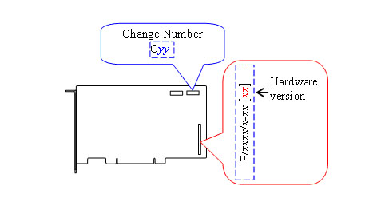

12.8 Hardware Version and Change Number
The location of the hardware version number and change number depend on the form factor of the board as shown in the following figure.

This document describes the version of hardware and change number as follows.
Example;
PCI-3133
Hardware version is version 12.
Chang number is C01.PCI-3133[12]C01
© 2000, 2013 Interface Corporation. All rights reserved.